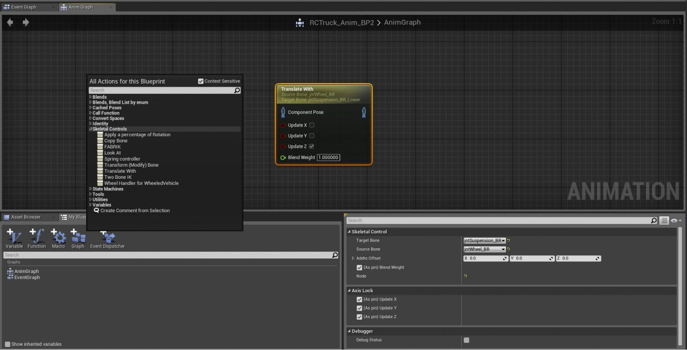

Animation Node, Translate With Complete Source Code and Instructions
Contents
Overview
Original Author
Dear Community ,
In this new tutorial, I will explain the complete process of creating a new Animation Node.
The main purpose for a new tutorial is to help clear up some of the common issue people have been running into when creating nodes for use in Blueprint.
This tutorial will focus on creating a new Skeletal Control Node called Translate With.
A quick primer on the Translate With Node: The node is designed to take a bone (Target) and replicate the movements of another bone (Source) on the specified Axis, with the specified offset. 
Complete Code for the Translate With Node
I will include the complete source code, along with any other needed lines of code to completely integrate the new node into your source. ( A note on integration, before you begin, you need to determine the scope you wish to use a new node in. For example, if you want to use the node for only one project, you do not need to add the code to the engine source, and can instead add it only to your module. If you plan to use the node across a number of different projects, it may be worth your time to integrate it into your engine, however, this can cause issues if you plan to share the node with others, as they would also have to add the node to the engine in the same manner that you have )
Choosing a beginning Class
In Unreal there are a massive amount of Classes to start with. In general, it is always a good idea to take the time to look through these classes for a couple of reasons. First, by looking through the Classes already in place, you can find the Class that best suits your needs as a base or starting point. Second, it can be extremely helpful to look at the code of other Classes to better understand how to extend these Classes for your needs. If you are unsure of what Class to start from, you can visit https://docs.unrealengine.com/latest/INT/Programming/index.html for a detailed list of the components included in the Engine.
For this particular project, we will be extending the AnimNode_Base class, which you can look through in AnimNodeBase.h I am starting with this class because it has the majority of the functionality we will need, but does not include any additional functionality we do not need. In contrast, you can look at AnimNode_SkeletalControl.h and see that it already has a few things we will not be using to help you understand this choice better.
AnimNode_TranslateWith
.h
// Created by Chance_07 2014
#pragma once
#include "AnimNode_TranslateWith.generated.h"
USTRUCT()
struct FAnimNode_TranslateWith : public FAnimNode_Base
{
GENERATED_USTRUCT_BODY()
/** Input link(Base Pose) **/
UPROPERTY(EditAnywhere, BlueprintReadWrite, Category = Links)
FComponentSpacePoseLink ComponentPose;
/** Name of bone to control **/
UPROPERTY(EditAnywhere, BlueprintReadWrite, Category = SkeletalControl)
FBoneReference TargetBone;
/** Source Bone Name to get transform from **/
UPROPERTY(EditAnywhere, BlueprintReadWrite, Category = SkeletalControl)
FBoneReference SourceBone;
/** This is typically the FORWARD Axis, and is false by default **/
UPROPERTY(EditAnywhere, BlueprintReadWrite, Category = AxisLock, meta = (PinHiddenByDefault))
bool bUpdateX;
/** This is typically the SIDE-TO-SIDE Axis, and is false by default **/
UPROPERTY(EditAnywhere, BlueprintReadWrite, Category = AxisLock, meta = (PinHiddenByDefault))
bool bUpdateY;
/** This is typically the UP Axis, and is true by default **/
UPROPERTY(EditAnywhere, BlueprintReadWrite, Category = AxisLock, meta = (PinHiddenByDefault))
bool bUpdateZ;
/** Target Location in world space if LookAtBone is empty */
UPROPERTY(EditAnywhere, BlueprintReadWrite, Category = SkeletalControl)
FVector AddtoOffset;
/** Controls how much of the translation is blended to the target, default is 1 **/
UPROPERTY(EditAnywhere, BlueprintReadWrite, Category = SkeletalControl, meta = (PinShownByDefault))
float BlendWeight;
public:
FAnimNode_TranslateWith();
public:
// FAnimNode_Base interface
virtual void Initialize(const FAnimationInitializeContext& Context) OVERRIDE;
virtual void CacheBones(const FAnimationCacheBonesContext & Context) OVERRIDE;
virtual void Update(const FAnimationUpdateContext& Context) OVERRIDE;
virtual void EvaluateComponentSpace(FComponentSpacePoseContext& Output) OVERRIDE;
// End of FAnimNode_RCAnimNode interface
protected:
// initialize any bone references you have
virtual void InitializeBoneReferences(const FBoneContainer & RequiredBones);
// return true if it is valid to Evaluate
virtual bool IsValidToEvaluate(const USkeleton * Skeleton, const FBoneContainer & RequiredBones);
// Evaluate the new component-space transforms for the affected bones.
virtual void EvaluateBoneTransforms(USkeletalMeshComponent* SkelComp, const FBoneContainer & RequiredBones, FA2CSPose& MeshBases, TArray<FBoneTransform>& OutBoneTransforms);// {}
private:
FVector ModTargetLocationInCompSpace;
FVector CurrentAddedOffset;
FVector JointOffset;
};
About the Header (.h) file
Lets take a quick look at this header file. At the top we have an include file. AnimNode_TranslateWith.generated.h is created by UBT. You do not need to create or edit this file, but should always be included with your code.
Next, we have our USTRUCT() declaration which tells Unreal what this section has, and what Class we are pulling from (in this case, FAnimNode_Base).
After the main declaration, we have a few more that come in the form of UPROPRETY. The first one, ComponentPose, is going to be used as the input for our node when added to an Animation Blueprint.
The next two are our Target Bone, and our Source Bone. The Target Bone is the bone we will be applying all of our transformations to, while the Source Bone is the bone we will be pulling information from.
Next we have the Constructor (FAnimNode_TranslateWith();)
After the Constructor, we have some functions. Notice that the first four have the word OVERRIDE at the end. This simply means that the parent class also has these functions, but we wish to modify them in our .cpp file.
The last two parts of our header have a few added functions, and a few variables. Notice that the variables are set to private. In this instance, I have no intention of letting any other nodes, or code have access to these, and therefor they are private.
.cpp
// Created by Chance_07 2014
#include "YourGame.h"
#include "EnginePrivate.h"
#include "AnimNode_TranslateWith.h"
FAnimNode_TranslateWith::FAnimNode_TranslateWith()
: FAnimNode_Base()
, bUpdateX(false)// This is only to set
, bUpdateY(false)// the defaults for the
, bUpdateZ(true)// Axis pins (Can be changed in BP)
, AddtoOffset(FVector::ZeroVector)
{
BlendWeight = 1;
JointOffset.ZeroVector;
// NULL so that it will be tested at least once
CurrentAddedOffset.X = NULL;
CurrentAddedOffset.Y = NULL;
CurrentAddedOffset.Z = NULL;
}
void FAnimNode_TranslateWith::Initialize(const FAnimationInitializeContext& Context)
{
ComponentPose.Initialize(Context);
}
void FAnimNode_TranslateWith::Update(const FAnimationUpdateContext& Context)
{
ComponentPose.Update(Context);
}
void FAnimNode_TranslateWith::CacheBones(const FAnimationCacheBonesContext & Context)
{
InitializeBoneReferences(Context.AnimInstance->RequiredBones);
ComponentPose.CacheBones(Context);
}
//This is just a check to make sure that the bones are present
void FAnimNode_TranslateWith::InitializeBoneReferences(const FBoneContainer & RequiredBones)
{
// Check the Source Bone
if (SourceBone.Initialize(RequiredBones)){}
else
{
UE_LOG(LogAnimation, Warning, TEXT("No Source Bone found, please check input"));
}
// Check the Target Bone
if (TargetBone.Initialize(RequiredBones)){}
else
{
UE_LOG(LogAnimation, Warning, TEXT("No Target Bone found, please check input"));
}
}
//This Checks for Updates, if no Axis is checked, returns Base Pose and moves on
void FAnimNode_TranslateWith::EvaluateComponentSpace(FComponentSpacePoseContext& Output)
{
// Evaluate the input
ComponentPose.EvaluateComponentSpace(Output);
// If any Axis is checked, and both bones are present, then we will continue
if (((bUpdateX) || (bUpdateY) || (bUpdateZ)) && IsValidToEvaluate(Output.AnimInstance->CurrentSkeleton, Output.AnimInstance->RequiredBones))
{
USkeletalMeshComponent* Component = Output.AnimInstance->GetSkelMeshComponent();
TArray<FBoneTransform> BoneTransforms;
EvaluateBoneTransforms(Component, Output.AnimInstance->RequiredBones, Output.Pose, BoneTransforms);
checkSlow(!ContainsNaN(BoneTransforms));
if (BoneTransforms.Num() > 0)
{
Output.Pose.LocalBlendCSBoneTransforms(BoneTransforms, BlendWeight);
}
}
}
//This Evaluates the bones, and transforms
void FAnimNode_TranslateWith::EvaluateBoneTransforms(USkeletalMeshComponent* SkelComp, const FBoneContainer & RequiredBones, FA2CSPose& MeshBases, TArray<FBoneTransform>& OutBoneTransforms)
{
check(OutBoneTransforms.Num() == 0);
// Component Space Transforms used to modify Target Bone
FTransform SourceBoneTM = MeshBases.GetComponentSpaceTransform(SourceBone.BoneIndex);
FTransform TargetBoneTM = MeshBases.GetComponentSpaceTransform(TargetBone.BoneIndex);
// If any changes have occured, add them, and reset offset
if (!(CurrentAddedOffset == AddtoOffset))
{
CurrentAddedOffset = SkelComp->ComponentToWorld.InverseTransformPosition(AddtoOffset);
JointOffset.Set((NULL),(NULL),(NULL));
}
if ( (JointOffset.X == NULL) || (JointOffset.Y == NULL) || (JointOffset.Z == NULL))// If no Axis are checked, no need to do anything
{
// These are based on the Base Pose location and used to create the default offset
FVector tempSourceOffset;
FVector tempTargetOffset;
// Get the Base Pose of the Source Bone
tempSourceOffset.Set((SourceBoneTM.GetLocation().X), (SourceBoneTM.GetLocation().Y), (SourceBoneTM.GetLocation().Z));
// Get the Base Pose of the Target Bone
tempTargetOffset.Set((TargetBoneTM.GetLocation().X), (TargetBoneTM.GetLocation().Y), (TargetBoneTM.GetLocation().Z));
// Get the Starting Offset from ALL inputs
JointOffset.Set((tempTargetOffset.X-tempSourceOffset.X+CurrentAddedOffset.X),(tempTargetOffset.Y-tempSourceOffset.Y+CurrentAddedOffset.Y),(tempTargetOffset.Z-tempSourceOffset.Z+CurrentAddedOffset.Z));
// Assign Offset to Mod Target Location
ModTargetLocationInCompSpace.Set((tempTargetOffset.X), (tempTargetOffset.Y), (tempTargetOffset.Z));
}
//need to add a multiplier control so that you can control how much of the source movement is translated to the target(I.E. BlendEffects)
if (bUpdateX)//Update X if checked
{
ModTargetLocationInCompSpace.X = ((SourceBoneTM.GetTranslation().X)+ JointOffset.X);//SourceTM + Offset
}
if (bUpdateY)//Update Y if checked
{
ModTargetLocationInCompSpace.Y = ((SourceBoneTM.GetTranslation().Y) + JointOffset.Y);
}
if (bUpdateZ)//Update Z if checked
{
ModTargetLocationInCompSpace.Z = ((SourceBoneTM.GetTranslation().Z) + JointOffset.Z); //(SourceBoneTM.GetTranslation().Z);
}
//Set the Targets Transform and pass out to Output(End of tick)
TargetBoneTM.SetTranslation(ModTargetLocationInCompSpace);
// Returns to caller with new location
OutBoneTransforms.Add(FBoneTransform(TargetBone.BoneIndex, TargetBoneTM));
}
// Makes sure that both bones are valid
bool FAnimNode_TranslateWith::IsValidToEvaluate(const USkeleton * Skeleton, const FBoneContainer & RequiredBones)
{
// if both bones are valid
return (TargetBone.IsValid(RequiredBones) && (SourceBone.IsValid(RequiredBones)));
}
About the Code(.cpp) file
Lets take a look at the code file now.
Again we start off with a couple of include files. One thing to note here, is that the first include file should always be the header file for your module. In this case, "YourGame.h". We also need to make sure that we include the AnimNode_TranslateWith.h file, otherwise our code will not know which header to use.
After the includes, we have some defaults. This section is generally up to the user, but it does outline the starting point of the node. For this example, we have set the Z-Axis to true, and the other Axis' to false. We also declare a starting point for our BlendWeight, and clear out our CurrentAddedOffset (which I will explain soon).
Next we have some functions. First we will Initialize the input (ComponentPose). Next we call Update. After Update, we call the CacheBones function. This does two things. First, it calls the InitializeBoneReferences function. After that has run, we cache the ComponentPose.
The InitializeBoneReferences works the same as our Initialize from earlier, except that it focuses on our Target and Source bones. If for whatever reason, it cannot find one of these two, we will print an error message to the Output Log. This can be helpful for troubleshooting issues.
After InitializeBoneReferences, we have EvaluateComponentSpace. This takes our input pose, and evaluates it. After that, it checks a couple things. First, we test to see if at least one Axis is selected for update. If no Axis has been selected, there is no need to go any farther. After we check the Axis selection, and if one is selected, we then check that the bones in Target and Source are valid bones to be evaluated. If both bones are, then we will continue.
If everything has checked out good to this point, we will create a couple variables, and then call EvaluateBoneTransforms.
After EvaluateBoneTransforms has finished, we come back here and run checkSlow on our BoneTransforms.
Finally, we send the output to the next node in the Animation Blueprint.
About EvaluateBoneTransforms
This is the "meat" of our node. First we will check our OutBoneTransforms array. Next we create two FTransform variables, and assign them to our Source bone, and Target bone. Next, we check our CurrentAddedOffset to see if it equals AddtoOffset. If you remember, earlier we set CurrentAddedOffset to NULL. This is why. The first time this runs, when we test the CurrentAddedOffset == AddtoOffset, it always come back as false which will in turn, run the following code. From that point on, if nothing changes, it will not have a need to update this part. After we have assigned CrrentAddedOffset a value, we clear JointOffset. This again is strictly to update only if we have to.
We check JointOffset for NULL values, and if any return we will run the following section. We create two FVectors, assign them each a value, run some simple math operations and then assign them to JointOffset. We also assign the Target bones location to ModTargetLocationInCompSpace, which simply holds the starting location in Component Space.
Next, we check each Axis one at a time, and if an Axis is selected, we change ModTargetLocationInCompSpace accordingly (this will be used to update our Target bone).
Finally, we input or new location to our Target bone transform, and return the new value to our OutBoneTransform.
AnimGraphNode_TranslateWith
So now what? We have our code in place, maybe we have compiled and run the Editor, but no node. We still have two files left to add. These are the AnimGraphNode files and they hold the code that creates the visual representation of our node.
.h
// Created by Chance_07 2014
#pragma once
#include "AnimGraphNode_Base.h"
#include "AnimNode_TranslateWith.h"
#include "AnimGraphNode_TranslateWith.generated.h"
/**
*
*/
UCLASS(MinimalAPI, dependson = AnimNode_TranslateWith)
class UAnimGraphNode_TranslateWith : public UAnimGraphNode_Base
{
GENERATED_UCLASS_BODY()
UPROPERTY(EditAnywhere, Category = SkeletalControl)
FAnimNode_TranslateWith Node;
public:
// UEdGraphNode interface
virtual FText GetNodeTitle(ENodeTitleType::Type TitleType) const OVERRIDE;
virtual FString GetTooltip() const OVERRIDE;
virtual FString GetNodeCategory() const OVERRIDE;
virtual FLinearColor GetNodeTitleColor() const OVERRIDE;
virtual void CreateOutputPins() OVERRIDE;
// End of UEdGraphNode interface
protected:
virtual FText GetControllerDescription() const ;
};
AnimGraphNode_TranslateWith.h contains the same format as our previous header file. We have our include files, our declarations, and our OVERRIDE. You should notice, we do have one UPROPRETY in here where we declare a variable using the Category = SkeletalControl. This is where in the context menu our node will appear.
.cpp
// Created by Chance_07 2014
#include "YourGame.h"
#include "Editor/AnimGraph/Private/AnimGraphPrivatePCH.h"
#include "AnimationGraphSchema.h"
#include "AnimGraphNode_TranslateWith.h"
#define LOCTEXT_NAMESPACE "AnimGraph_TranslateWith"
UAnimGraphNode_TranslateWith::UAnimGraphNode_TranslateWith(const FPostConstructInitializeProperties& PCIP)
: Super(PCIP)
{
}
//Title Color!
FLinearColor UAnimGraphNode_TranslateWith::GetNodeTitleColor() const
{
return FLinearColor(0.75f, 0.75f, 0.10f);
}
//Node Category
FString UAnimGraphNode_TranslateWith::GetNodeCategory() const
{
return FString("Skeletal Controls");
}
FText UAnimGraphNode_TranslateWith::GetControllerDescription() const
{
return LOCTEXT("TranslateWithNode", "Translate With");
}
//Node Tooltip
FString UAnimGraphNode_TranslateWith::GetTooltip() const
{
return TEXT("The Translate WIth control allows the Target Bone to follow the Translation of the Source Bone on all Specified Axis");
}
//Node Title(Needs to be updated now since node is much more versatile)
FText UAnimGraphNode_TranslateWith::GetNodeTitle(ENodeTitleType::Type TitleType) const
{
FFormatNamedArguments Args;
Args.Add(TEXT("ControllerDescription"), GetControllerDescription());
if (TitleType == ENodeTitleType::ListView)
{
return FText::Format(LOCTEXT("AnimGraphNode_TranslateWith_Title", "{ControllerDescription}"), Args);
}
else
{
Args.Add(TEXT("SourceBoneName"), FText::FromName(Node.SourceBone.BoneName));
Args.Add(TEXT("TargetBoneName"), FText::FromName(Node.TargetBone.BoneName));
return FText::Format(LOCTEXT("AnimGraphNode_TranslateWith_Title", "{ControllerDescription}\nSource Bone: {SourceBoneName}\nTarget Bone: {TargetBoneName}"), Args);
}
}
//Node Output Pin(Output is in Component Space, Change at own RISK!)
void UAnimGraphNode_TranslateWith::CreateOutputPins()
{
const UAnimationGraphSchema* Schema = GetDefault<UAnimationGraphSchema>();
CreatePin(EGPD_Output, Schema->PC_Struct, TEXT(""), FComponentSpacePoseLink::StaticStruct(), /*bIsArray=*/ false, /*bIsReference=*/ false, TEXT("Pose"));
}
#undef LOCTEXT_NAMESPACE
AnimGraphNode_TranslateWith.cpp again contains the functions we will be running. The one part I would like to draw your attention to is the CreateOutputPins function. As you can see, it is marked as Change at own RISK, and for very good reason. This output is designed to run in ComponentSpace, and if for some reason, that changes, it can cause instability issues in the Editor. I recommend, at least until you are very familiar with the Engine, that you do not change this.
Build.cs and YourGame.h files
Depending on the Engine version you are using, this may change some but I will cover the basics. YourGame.h contains a list of include files that your module or game needs access to, so be sure to check that you have included anything you need to here. This can change greatly based on your project, but always try to only include files you have to. There is no need to include files you already have access to.
An example here would be:
#include "BlueprintUtilities.h"
Build.cs again can change greatly based on your project, but a couple lines that will help get you started:
PublicDependencyModuleNames.AddRange(new string[] { "Core", "CoreUObject", "Engine"});
PrivateDependencyModuleNames.AddRange(new string[] { "InputCore", "HTTP", "AnimGraph", "BlueprintGraph", "UnrealEd" });
These are basically just paths to different locations within the engine.
Extension: Non-editor builds
Added by Leon Rosengarten (lion032)
When you add editor extensions you must separate the extensions into it's own module that only will be linked when you build your game with editor otherwise it will not compile since non-editor builds will not include any editor data!
To properly add new AnimNode and AnimGraph to your project you will need to split it into two modules, one for the game and one for the editor.
Example:
Directory tree:
/Source
/MyGameName
/Classes
/Animation
AnimNode_MyNode.h
/Private
/Animation
AnimNode_MyNode.h
/Public
MyGameName.Build.cs
/MyEditorExtension
/Classes
MyEditorExtension.Build.cs
/Animation
AnimGraphNode_MyNode.h
/Private
/Animation
AnimGraphNode_MyNode.h
MyEditorExtension.cpp
/Public
MyEditorExtension.h
MyEditorExtension.Build.cs:
using UnrealBuildTool;
public class MyEditorExtension: ModuleRules
{
public MyEditorExtension(TargetInfo Target)
{
PrivateIncludePaths.Add("EditorModule/Private");
PublicDependencyModuleNames.AddRange(new string[] { "Core", "CoreUObject", "Engine", "InputCore", });
PrivateDependencyModuleNames.AddRange(new string[] { "UnrealEd", "BlueprintGraph", "AnimGraph", });
PublicDependencyModuleNames.AddRange(
new string[] {
"MyGameName"
}
);
CircularlyReferencedDependentModules.AddRange(
new string[] {
"MyGameName",
}
);
}
}
MyGameName.Build.cs:
using UnrealBuildTool;
public class MyGameName: ModuleRules
{
public MyGameName(TargetInfo Target)
{
PublicDependencyModuleNames.AddRange(new string[] { "Core", "CoreUObject", "Engine", "InputCore" });
if (UEBuildConfiguration.bBuildEditor == true)
{
PublicDependencyModuleNames.AddRange(
new string[] {
"MyEditorExtension"
}
);
CircularlyReferencedDependentModules.AddRange(
new string[] {
"MyEditorExtension",
}
);
}
}
}
Conclusion
At this point, you should be able to compile the Engine and run your game. Create a new Animation Blueprint (or open existing one), right click and look under Skeletal Controls. You should see Translate With as an available node now.
Congratulations! You created a new animation node.